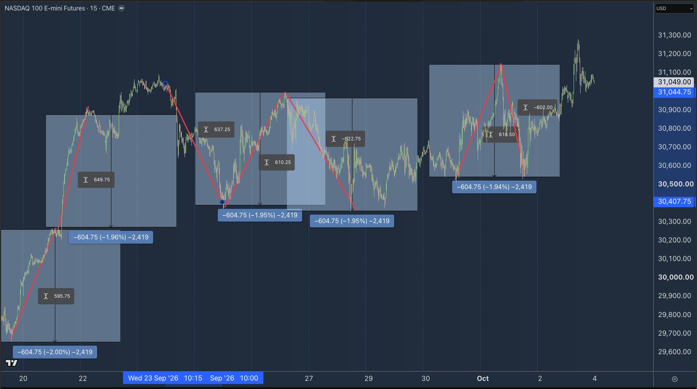

A reasonably quiet week on the economic calendar compared with some of the recent stuff, but there are still a few things worth having in the diary…
All times UK:
- Monday: US ISM Services, 3 pm.
- Wednesday: Fed minutes, 7 pm.
- Friday: University of Michigan consumer sentiment, 3 pm.
You can see the full week on XTB's economic calendar here.
Anyway, I was looking through the Nasdaq chart this weekend and spotted something quite interesting…
600 POINTS…

Have a look at that… (You might have to zoom in)
That's the Nasdaq futures 15-minute chart from the end of September to the end of last week, and look at the symmetry of those rotations… roughly 600 points.
Now, obviously I've marked these this weekend, so I'm not pretending the market is politely measuring out 600-point moves for us. 😁
But I do think there's something useful here…
Markets often develop a bit of a rhythm, right?
Sometimes it's obvious, sometimes it's more of a broad feel, but the size of the drives, pullbacks, and rotations tends to tell you something about the current environment.
If Nasdaq has been routinely making 500-600 point rotations and we're treating every 80-point pullback as a major reversal, we're probably not calibrated to the market we're actually trading… which can get us caught out on perfectly good trades.
Likewise, if the market has been moving in fairly tight rotations and suddenly starts throwing out huge drives, something has changed…
Volatility has expanded, the rhythm has shifted, and maybe our stops, targets, and expectations need to shift with it.
The exact number isn't really the point.
The useful question is probably more like:
What size rotations is this market currently making?
That applies whether you're trading five-minute swings, hourly rotations, or multi-day moves. It's not a setup as such, just another bit of context to help us read the terrain properly.
And actually, 'calibration' is probably a decent way to think about Q4 more broadly too.
We've got oil back in play, bond yields spiking, AI still dominating the equity story, and earnings season about to kick off…
So whatever you trade, there are a few bigger drivers worth keeping on the radar as we head into the final quarter.
Q4 OUTLOOK
Which is why today's sponsor XTB has picked pretty good timing for its new Q4 outlook…
It covers some of the bigger themes likely to drive markets through the final three months of the year, including oil, the Middle East, bond yields, gold, AI stocks, and the upcoming earnings season.
Worth a read as we roll into Q4: